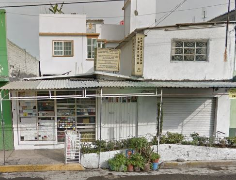

Fancy Print
“De una imagen a tus manos.”
“De una imagen a tus manos.”
Somos una empresa mexicana que inicio cuando nos vimos en la necesidad de abrir un local honesto y con trabajos originales, como sabemos existen muchos sitios web donde realizan trabajos de impresiones, de diseños en playeras o tazas, los usuarios en su gran su gran mayoría no recibían lo que esperaban ya que el resultado final del diseño era otro ya impreso y el proceso de compra era complicado, haciendo que estos estén disgustados con el producto final. Así que decidimos abrir un negocio local donde las ventas eran favorables y donde resultados son exactamente iguales a los requerimientos, después abrimos nuestra página web para su comodidad del usuario al pedir un producto personalizado, queremos evitar pasos que pueden llegar a ser muy complicados para el cliente y que estén totalmente satisfechos con la compra.
